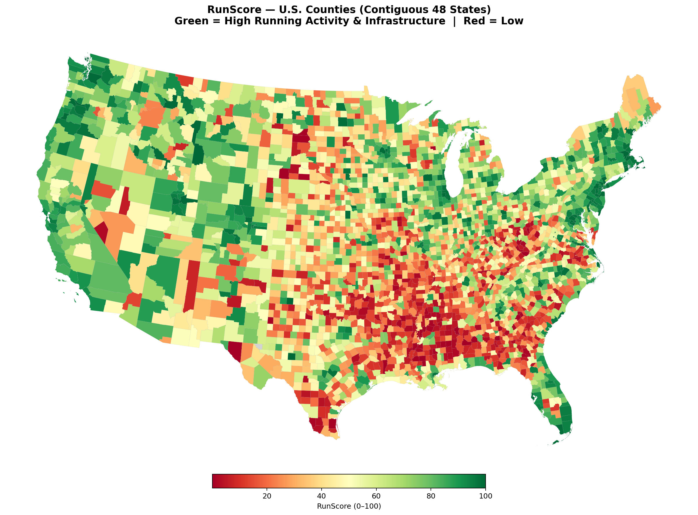
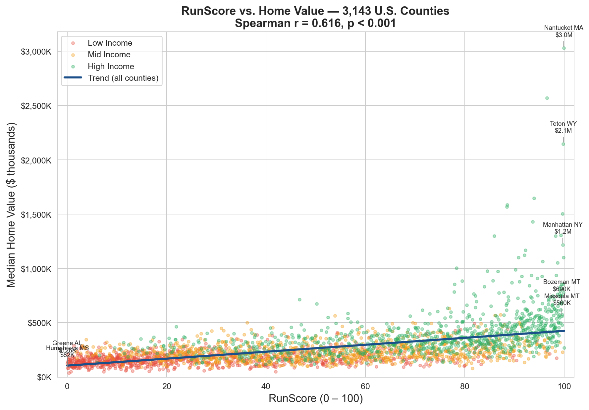
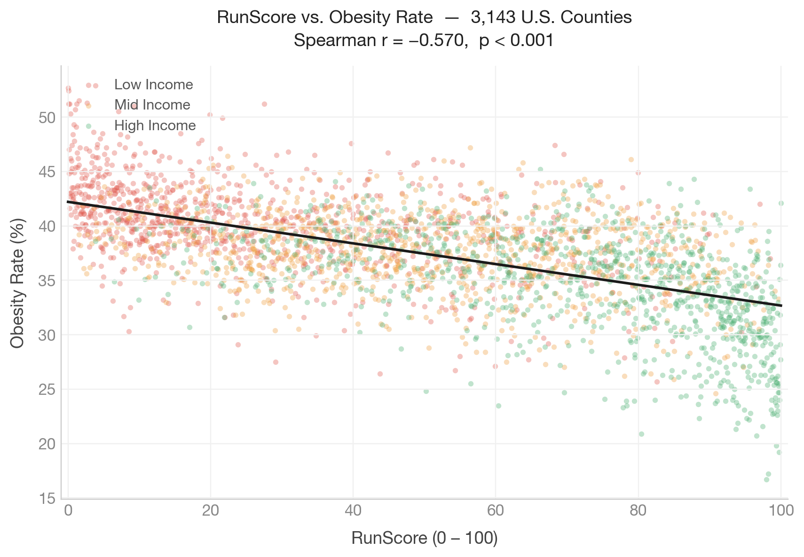
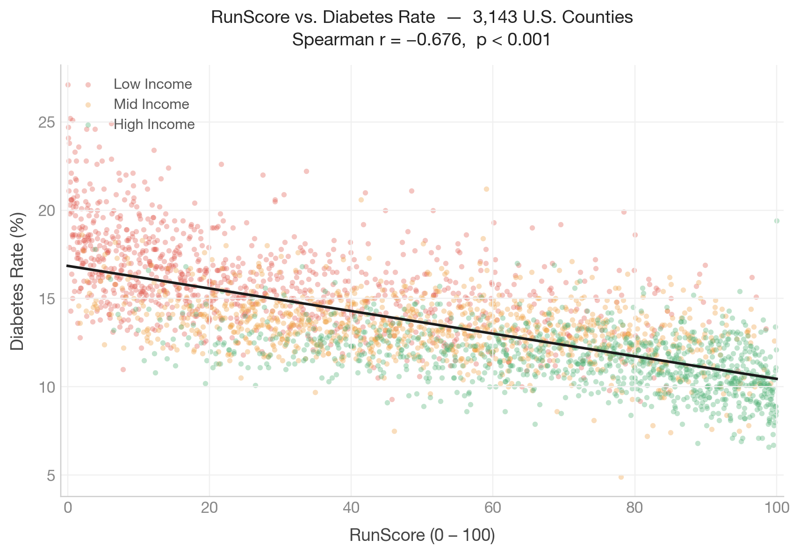
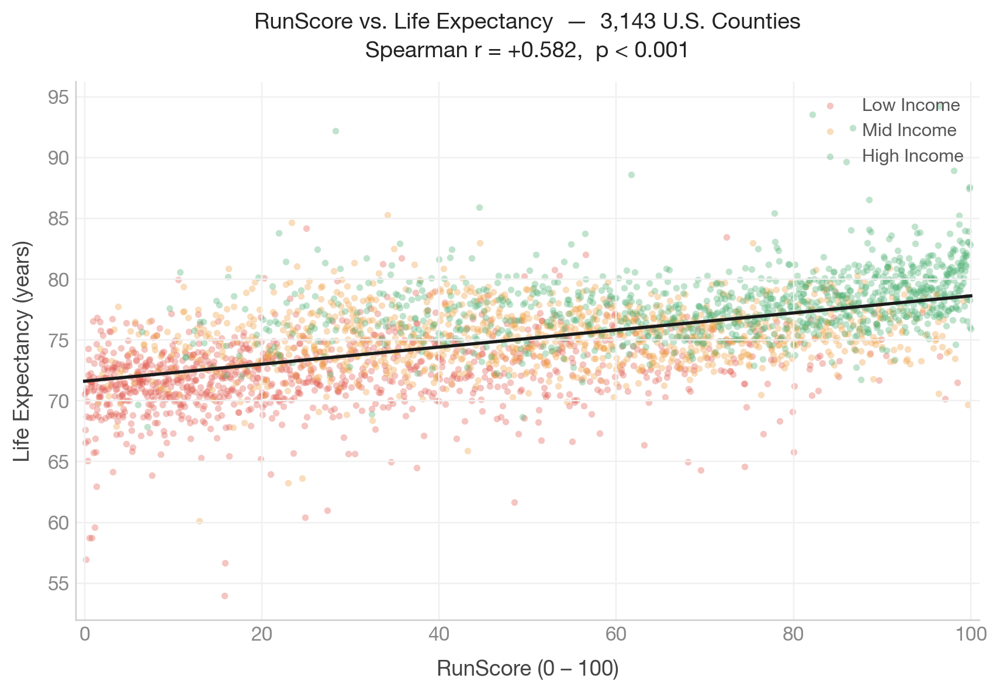
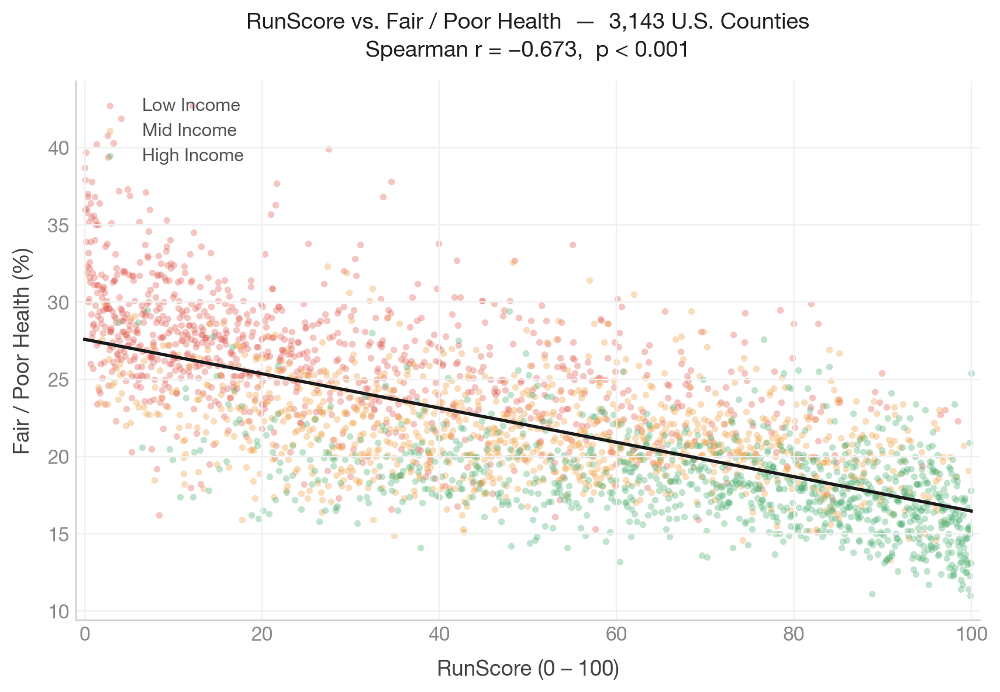
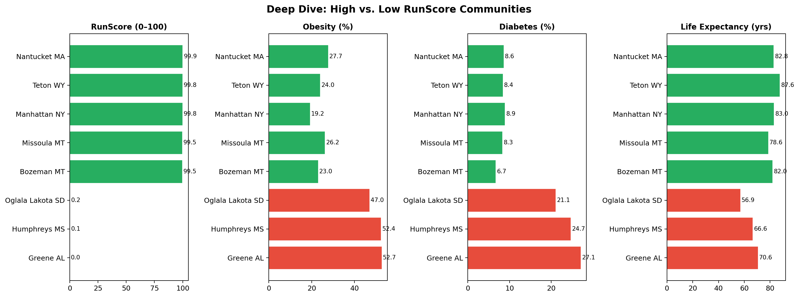

This is RunScore — a measure of running culture built for every U.S. county. All 3,143 of them get a score from 0 to 100, constructed from five public datasets: how active residents are, how many races they organize, how walkable their streets are, and whether the fitness infrastructure to support it all actually exists on the ground.
The question we set out to answer: does a community that runs also live longer, stay healthier, and hold its real estate value better? The answer is yes — and the effect is large enough that a 10-point RunScore advantage predicts $7,885 more in median home value, even after controlling for income.
RunScore is the signal that's missing from every real estate platform. Not walkability. Not school ratings. Whether the people in a community actually move.







Each component captures a distinct dimension of running culture. All five are standardized to z-scores, averaged with equal weights, and expressed as a percentile rank from 0 to 100 across all 3,143 U.S. counties.